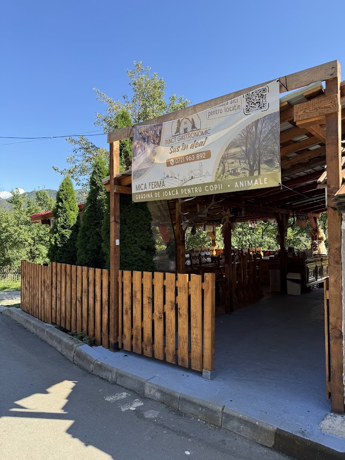
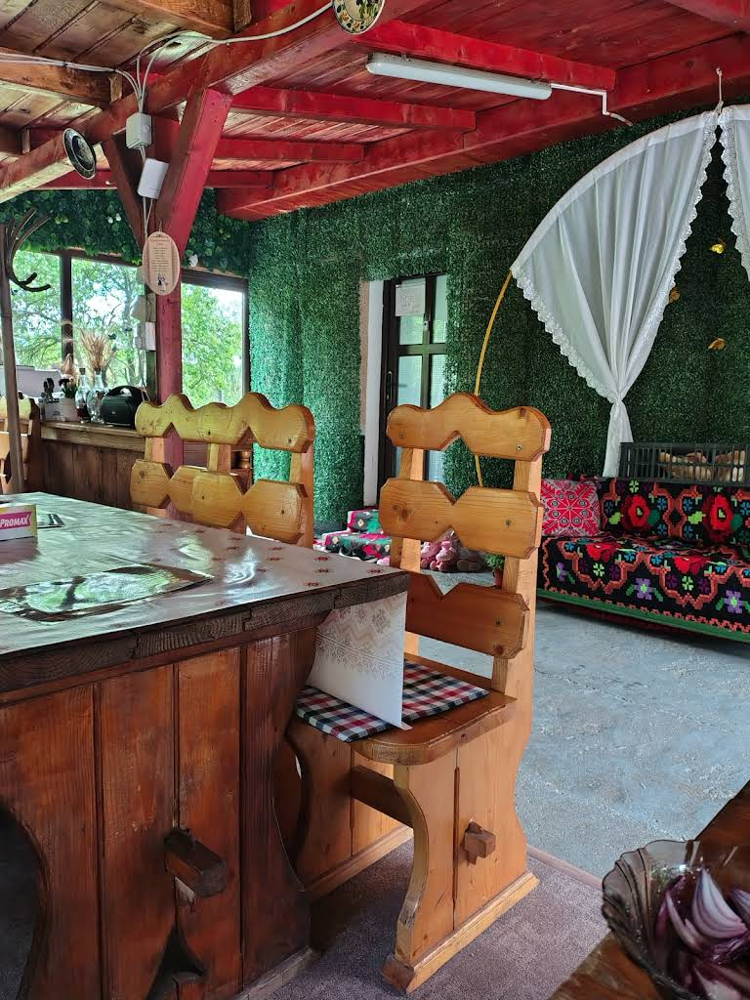
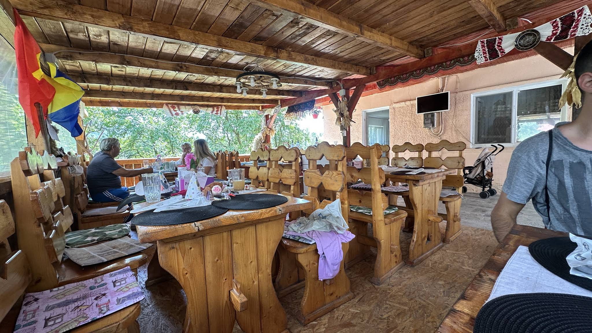
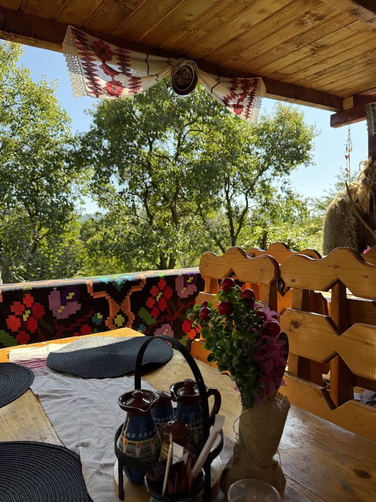
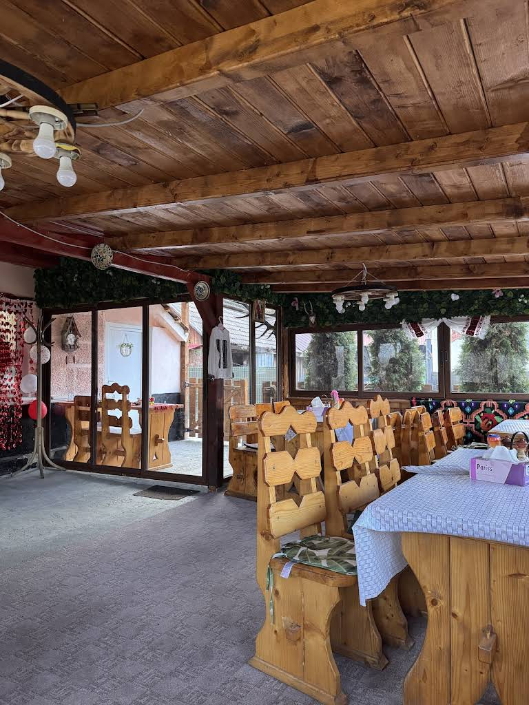
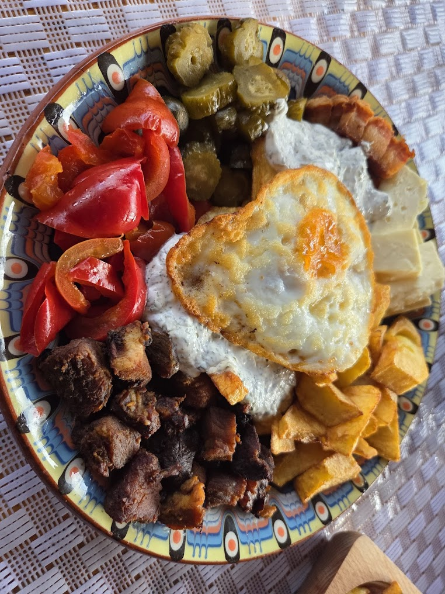
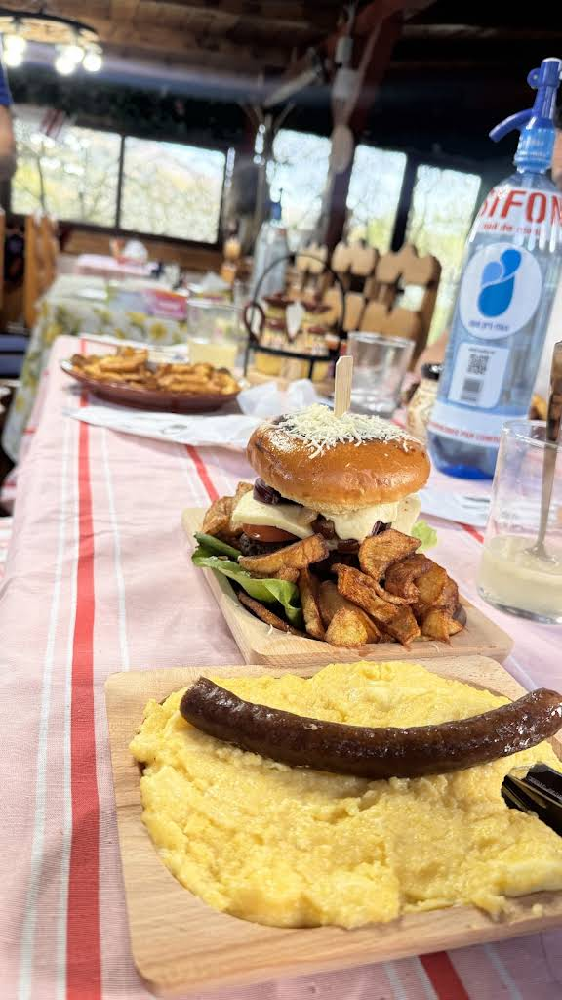

Punct Gastronomic Local · Mică fermă tradițională
Mâncare tradițională gătită încet, din ingrediente locale și bio, după rețete transmise din generație în generație — la poalele muntelui, într-o curte cu animale și loc de joacă pentru copii.
Povestea noastră

Ce servim
Meniul complet cu prețuri se stabilește împreună cu proprietarul.

Pentru toată familia
Atmosfera locului




Te așteptăm
📍 [Adresă completă — de confirmat cu proprietarul]
Zonă deal/munte, acces auto
🕒 [Program de funcționare — de confirmat]
👨👩👧 Recomandat pentru familii — grupuri mici, max. ~15 oaspeți